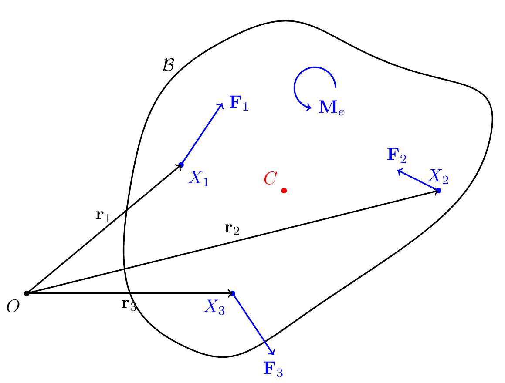
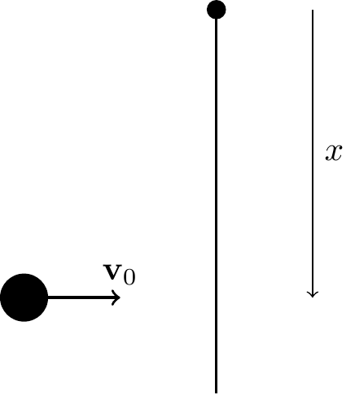

20 Kinetics of Rigid Bodies
20.1 Balance Laws for a Rigid Body
The balance laws for a rigid body are Euler’s first law (Balance of Linear Momentum, BoLM) and Euler’s second law (Balance of Angular Momentum, BoAM): \[\begin{align} {\bf F} &= m{\bf a}_C,\\ {\bf M}^O &= \dot{\bf H}^O \quad\text{about a fixed point }O,\\ {\bf M}^C &= \dot{\bf H}^C \quad\text{about the center of mass }C,\\ {\bf M}^P &= \dot{\bf H}^P+({\bf v}_P-{\bf v}_C)\times{\bf G} \quad\text{about any material point }P. \end{align}\] The BoAM is an independent postulate, not derivable from the BoLM.
20.2 Resultant Forces and Moments
The resultant force \({\bf F}\) is the sum of all external forces. The resultant moment about a point includes the moment due to forces plus any applied pure moments \({\bf M}_e\) not due to forces.
For \(K\) forces \({\bf F}_i\) acting at positions \({\bf r}_i\) plus a pure moment \({\bf M}_e\): \[\begin{align} {\bf F} &= \sum_{i=1}^K{\bf F}_i,\\ {\bf M}^O &= {\bf M}_e+\sum_{i=1}^K{\bf r}_i\times{\bf F}_i,\\ {\bf M}^C &= {\bf M}_e+\sum_{i=1}^K({\bf r}_i-{\bf r}_C)\times{\bf F}_i. \end{align}\]
Examples of pure moments: reaction moments \({\bf M}_R\) at joints; torsional spring moments \(-K_T(\theta-\theta_0){\bf E}_z\).
20.2.1 Does Weight Give a Moment About the Center of Mass?
The total weight is \({\bf W} = \int_{\mathcal{B}}{\bf g}\,dm = m{\bf g}\), and its moment about \(C\) is: \[\begin{align} {\bf M}^C = \int_{\mathcal{B}}\bpi\times{\bf g}\,dm = \lp\int_{\mathcal{B}}\bpi\,dm\rp\times{\bf g} = {\bf 0}, \end{align}\] since \(\int_{\mathcal{B}}\bpi\,dm = {\bf 0}\) by definition of the center of mass.
20.3 Equivalence of the BoAM Forms
20.3.1 BoAM About Any Point \(P\)
Starting from \({\bf M}^C = \dot{\bf H}^C\) and replacing \({\bf M}^P = {\bf M}^C+({\bf r}_C-{\bf r}_P)\times{\bf F}\): \[\begin{align} {\bf M}^P = \dot{\bf H}^C+({\bf r}_C-{\bf r}_P)\times{\bf F}. \end{align}\] Substituting \(\dot{\bf H}^C = \dot{\bf H}^P+({\bf v}_P-{\bf v}_C)\times{\bf G}+({\bf r}_P-{\bf r}_C)\times m{\bf a}_C\) and simplifying: \[\begin{align} {\bf M}^P = \dot{\bf H}^P+({\bf v}_P-{\bf v}_C)\times{\bf G}, \end{align}\] recovering the BoAM about a general material point \(P\).
20.3.2 BoAM About a Fixed Point \(O\)
If \(P\) is a fixed point \(O\) (so \({\bf v}_O = {\bf 0}\)), the above simplifies to \({\bf M}^O = \dot{\bf H}^O\).
20.4 Calculating the Derivative of Angular Momentum
Recall \({\bf H}^C = {\bf I}^C\bomega\) and \(\dot{\bf H}^C = \overset{\circ}{\bf H}^C+\bomega\times{\bf H}^C\), where \(\overset{\circ}{\bf H}^C\) is the corotational rate (time derivative with \({\bf e}_x,{\bf e}_y,{\bf e}_z\) fixed).
For \(\bomega = \omega{\bf E}_z\) (the case exclusively considered in this class): \[\begin{align} {\bf H}^C &= I^C_{xz}\omega_z{\bf e}_x+I^C_{yz}\omega_z{\bf e}_y+I^C_{zz}\omega_z{\bf e}_z,\\ \dot{\bf H}^C &= (I^C_{xz}\dot{\omega}-I^C_{yz}\omega^2){\bf e}_x+(I^C_{yz}\dot{\omega}+I^C_{xz}\omega^2){\bf e}_y+I^C_{zz}\dot{\omega}{\bf E}_z. \end{align}\] Analogously for other reference points.
ImportantNote!
For fixed axis rotation, sum moments about a fixed point on the axis. For general plane motion, sum about \(C\) or a general material point \(P\) using \[\begin{align} {\bf M}^P = (I^C_{xz}\dot{\omega}-I^C_{yz}\omega^2){\bf e}_x+(I^C_{yz}\dot{\omega}+I^C_{xz}\omega^2){\bf e}_y+I^C_{zz}\dot{\omega}{\bf E}_z+({\bf r}_C-{\bf r}_P)\times m{\bf a}_C. \end{align}\] In most problems, axes are chosen so that \(I_{xz}=I_{yz}=0\).
20.5 Conservative Moments
20.5.1 Torsional Spring
A torsional spring with stiffness \(K\) creates a couple \({\bf M}_S = -K\theta{\bf E}_z\). Its power is: \[\begin{align} {\bf M}_S\cdot\bomega = -K\theta\dot{\theta} = -\frac{d}{dt}\lp\frac{K\theta^2}{2}\rp. \end{align}\] Hence \(U = \frac{1}{2}K\theta^2\) for the torsional spring.
20.5.2 Constant Couple
A constant couple \({\bf M}_e = M_e{\bf E}_z\) has power \({\bf M}_e\cdot\bomega = M_e\dot{\theta} = -\frac{d}{dt}(-M_e\theta)\). Hence \(U = -M_e\theta\).
ImportantNote!
These results apply only for \(\bomega = \omega{\bf E}_z\). Constant couples are not conservative in general.
20.6 Impact Problems and Center of Percussion
For rigid bodies, impact ideas are the same as in systems of particles.
Example: Consider a projectile fired horizontally at a pendulum (in the horizontal plane, no gravity). Find position \(x\) along the pendulum such that the reaction force at the pin is nearly zero during impact.

If \(x\) is large, the horizontal reaction at \(O\) points left; if \(x\) is small, it points right. The optimal \(x\) that minimizes the reaction is called the center of percussion.
20.7 Summary
For \(K\) forces and a moment \({\bf M}_e\) acting on a rigid body, the balance laws are: \[\begin{align} {\bf F} = m\frac{d{\bf v}_C}{dt}, \qquad {\bf M}^O = \dot{\bf H}^O \quad (\text{or equivalently } {\bf M}^C = \dot{\bf H}^C). \end{align}\]
For fixed-axis rotation with \(\bomega = \omega{\bf E}_z\) and \(I_{xz}=I_{yz}=0\): \[\begin{align} {\bf F} = m\dot{\bf v}_C, \qquad {\bf M} = I_{zz}\dot{\omega}{\bf E}_z. \end{align}\]
Four classes of applications: (1) purely translational motion (\(\bomega=\balpha={\bf 0}\)), (2) rigid body with a fixed point, (3) rolling and sliding rigid bodies, (4) imbalanced rotors.
20.8 Summary
BoLM: \(\mathbf{F}=m\mathbf{a}_C\).
BoAM (three equivalent forms): \[\begin{align} \mathbf{M}^O = \dot{\mathbf{H}}^O \quad &(\text{fixed point } O), \\ \mathbf{M}^C = \dot{\mathbf{H}}^C \quad &(\text{center of mass } C), \\ \mathbf{M}^P = \dot{\mathbf{H}}^C + (\mathbf{r}_C-\mathbf{r}_P)\times m\mathbf{a}_C \quad &(\text{any material point } P). \end{align}\]
Angular momentum and inertia tensor: \[\begin{align} H^C_z = I^C_{zz}\,\omega, \qquad I^C_{zz} = \int_{\mathcal{B}}(x^2+y^2)\,dm. \end{align}\]
Parallel axis theorem: \(I^A_{zz} = I^C_{zz} + m d^2\) where \(d\) is the distance from \(C\) to \(A\).
20.9 Exercises
20.9.1 Set 18 – Moments of Inertia
1. [MKB B-004] Integration required. (ans. \(I_{xx}=\frac{3}{10}mr^2\), \(I_{yy}=\frac{2}{5}m(r^4+h^2)/(r^2)\))
2. [MKB B-029] Treat the hollow cylinder as a full cylinder of radius \(r_2\) minus a cylinder of radius \(r_1\). (ans. \(I_{xx}=\frac{1}{2}m(r_1^2+r_2^2)\))
3. [B-032] (ans. \(L=r\sqrt{2\sqrt{3}}\))
4. [B-034] (ans. \(I_{yy}=\rho L^3\left(\frac{43}{192}+\frac{83\pi}{128}\right)\))
20.9.2 Set 19 – Rigid Body Translation
1. [MKB 06-006] (ans. \(a=5.66\) m/s\(^2\))
2. [06-012] (ans. \(a=16.43\) ft/sec\(^2\))
3. [06-013] (ans. \(N_A=6.85\) kN up, \(N_B=9.34\) kN up)
4. [06-022] (ans. \(N=257\) kN up)
20.9.3 Set 20 – Fixed Point Rotation
1. [06-051] (See problem set for figure.)
20.9.4 Set 21 – General Plane Motion
1. [MKB 06-061] (ans. \(\alpha=48.8\) rad/s\(^2\) CW, \(\bar a_x=0\), \(\bar a_y=5\) m/s\(^2\))
2. [MKB 06-062] (ans. A: \(\alpha_A=\frac{g}{r}\sin\theta\), \(\mu_s=0\); B: \(\alpha_B=\frac{g}{2r}\sin\theta\), \(\mu_s=\frac{1}{2}\tan\theta\))
3. [06-063] (ans. \(\bar a=13.80\) ft/sec\(^2\) down incline, \(F=1.714\) lb up incline)
4. [06-070] (ans. \(a=\frac{8(m+M)g}{3\pi(m+3M)}\) left, \(\alpha=\frac{8mg}{3\pi r(m+3M)}\) CW)
5. [06-076] (ans. \(s=\frac{3d}{2}\))
6. [06-077] (ans. \(N_B=36.4\) N up)
20.9.5 Set 22 – Impulse and Momentum for Rigid Bodies
1. [MKB 06-136] (ans. \(\omega=1.811\) rad/s CCW)
2. [MKB 06-142] (ans. \(\mathbf{v}=\frac{Mu_M\mathbf{E}_x+m\mathbf{v}_m}{M+m}\), \(\omega=\frac{12vm}{L(4M+7m)}\) CCW)
3. [06-145] (ans. \(\omega=\frac{3mv_1}{(M+m)L}\) CW)
4. [06-146] (ans. \(N=2.04\) rev/s)
5. [06-148] (ans. \(\omega=1.593\) rad/s CCW, \(n=91.7\%\))
6. [06-155] (ans. \(t=\frac{2v_0}{g(7\mu_k\cos\theta-2\sin\theta)}\))